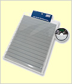
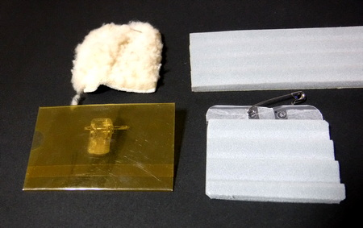
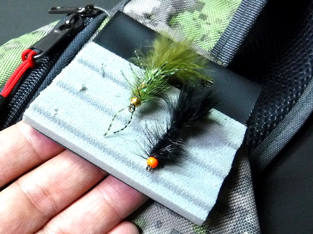

私のお気に入り
自作の道具たち 波形ウレタンフォーム製 フライパッチ
ことの始まり
昨シーズンは、高原の川での岩魚釣りも、下流域のニゴイ釣りでも、ベストやスリングバッグに付けていたのは、昔からあるムートン？の、モコモコした毛皮のフライパッチだった。しかし、長年使ってきたせいか、いささかくたびれて来て、刺して保持したフライが落ちたり、毛の中に埋もれてしまい、後からもう一度探すのが難しくなったりした。
そこで、フライボックスの自作例にならって財布に優しい自作を試みた次第。
材料と作成方法
- リップル（波形）のフォームマット
- フォームマットは、フライフックの保持に適度な弾力と硬度、耐久性が必要となる。
波形タイプは釣具メーカー FLUX製、リップルフォームシート M、もしくは、パズデザイン社の波形ウレタンフォーム ZAC-919 、あるいはカメラ用品メーカーのエツミなどから、E-6592 溝付ウレタンフォーム などが販売されている。波形の形状としては、FLUXかパズデザインの製品が良さそうだが、価格的にはエツミのフォームが安い。今回は、大昔に買って、まだ残っていたFLUX製のフォームを使用した。（笑） -

社のリップルフォームシート" width="120" height="140">

- 百円ショップで売っている、社員さん、店員さん用の名札ホルダー
これは、名刺やカードが挟める透明プラスチック製のホルダーで、背面にバネ式クリップと安全ピンが付いており、どちらかの方法でポケット上端や、衣類に固定できるようになっている。 - 百円ショップの名札ホルダーでは、大きさが足りないと思われる方は、軟質のプラスティックもしくは硬めのビニール。文具のクリアファイル、あるいはカードケースが使用可能。
- 名札ホルダーの寸法を測り、これに合わせてフォームをカットする。
- 名札ホルダーの前面に、両面テープを貼っておく。各フォーム製品には、粘着シートがあらかじめ付いているが、両面テープも併用すると、接着がより強固になる。フォーム裏面の剥離紙を剥がして、名札ホルダーに貼って出来上がり。
- ベスト、スリングバッグなど、パッチを付けたい位置に、クリップか安全ピンで固定。クリップだと藪漕ぎなどの激しい動作で外れて落下する懸念があるので、安全ピンの方が良いかと思われる。
- 軟質のプラスティックもしくは硬めのビニールを用いる場合は、クリアファイルなどを、縦方向に3cmほど余分を取ってカットし、フライパッチの上端に出る部分を折り返し、パンチで安全ピンが通せる間隔で２箇所穴を開ける。
- 折り返し部分を、両面テープか、クリアボンドで接着。安全ピンを穴に通して、パッチを付けたい位置に固定する。
- 安価。おそらく１個、200円程度で作れます。ウレタンフォームが比較的高価（僕にとっては）なのだが、１枚買えば、フライボックスを３～４個作ることができ、フライパッチも多数製作可能なので、コストパフォーマンスは良い。
- パッチに刺したフライが見やすく、再度使いたい時にすぐ見つけられる。ムートンのように毛の中に埋もれることがない。
- パッチに刺しているうちに、ドライフライのハックルが曲がってしまうことが無い。
- 好みのフォームを選べる。
リップルタイプ ＝ ドライフライ
平面タイプ ＝ ニンフ、ストリーマー
などです。

新旧フライパッチ、自作用材料
左上：旧来のムートン素材製品
右上：波形ウレタンフォーム
左下：百円ショップの名札ホルダー
右下：フライパッチ完成品（クリアフォルダー使用）
左上：旧来のムートン素材製品
右上：波形ウレタンフォーム
左下：百円ショップの名札ホルダー
右下：フライパッチ完成品（クリアフォルダー使用）
作り方（と、解説するほどのものではない）
このフライパッチの利点としては、

フライパッチ 完成写真
2020/06/19
私のお気に入り 目次へ
サイトマップ
ホームへ
お問い合わせ